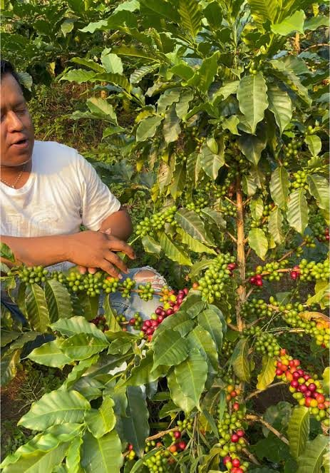
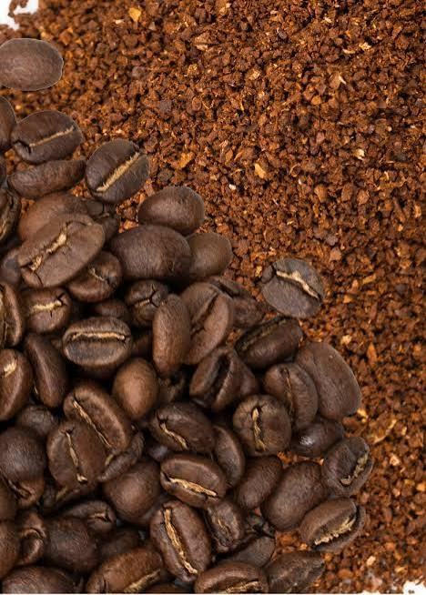
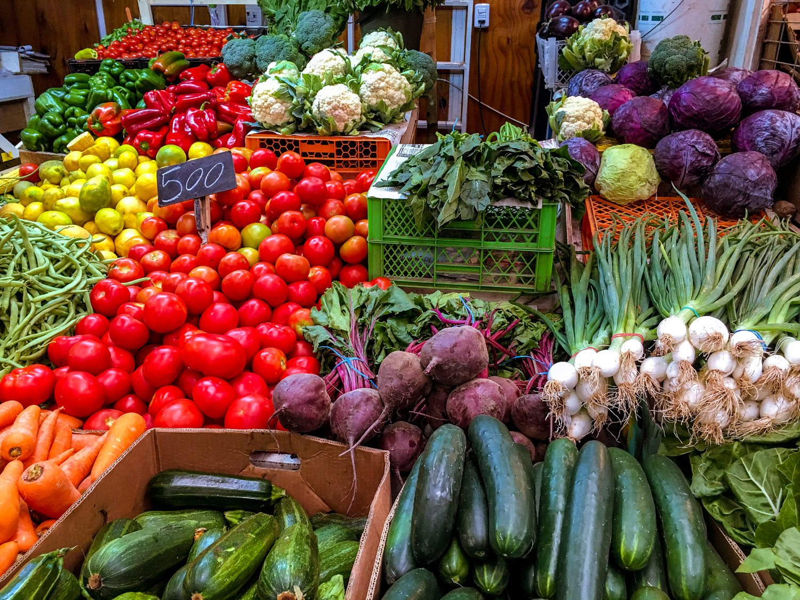
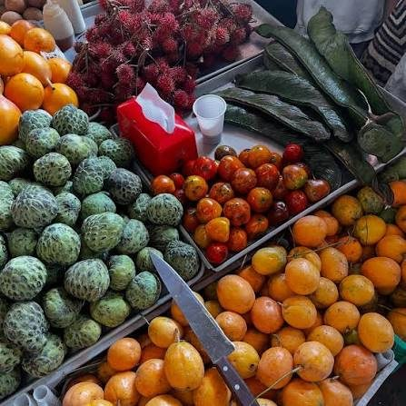
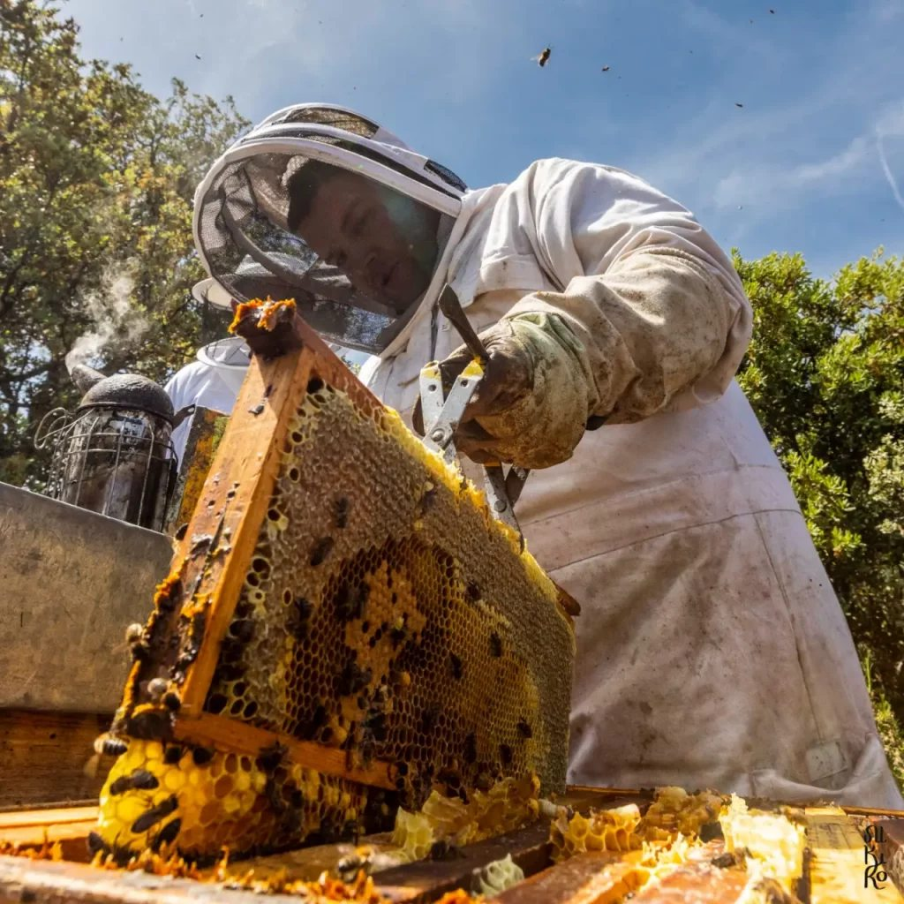
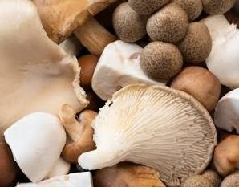

Cultivo de café
El cultivo y la cosecha del café reúnen conocimientos y trabajo campesino.
Conoce productos, cultivos y transformaciones que pueden fortalecer la economía rural.
← Volver al inicioUna muestra visual de cultivos, alimentos frescos y productos transformados asociados con la economía local.

El cultivo y la cosecha del café reúnen conocimientos y trabajo campesino.

Granos tostados para disfrutar el sabor y el trabajo detrás de cada cosecha.

Hortalizas y verduras de temporada para el consumo local y la comercialización.

Frutas del territorio y de la región, según temporada y disponibilidad.

La apicultura puede aportar productos y servicios ecosistémicos cuando se desarrolla responsablemente.

Diversidad de hongos comestibles y posibilidades de transformación alimentaria.

Preparaciones artesanales que agregan valor a frutas y cosechas.